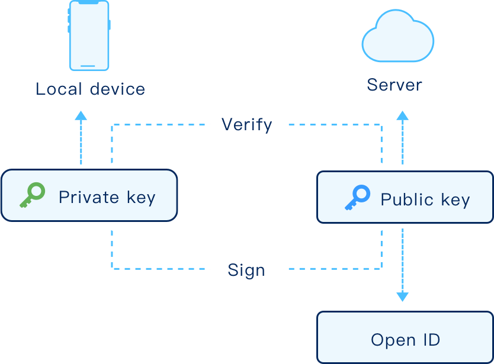
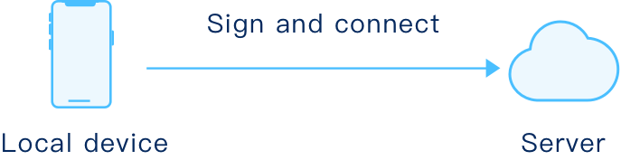
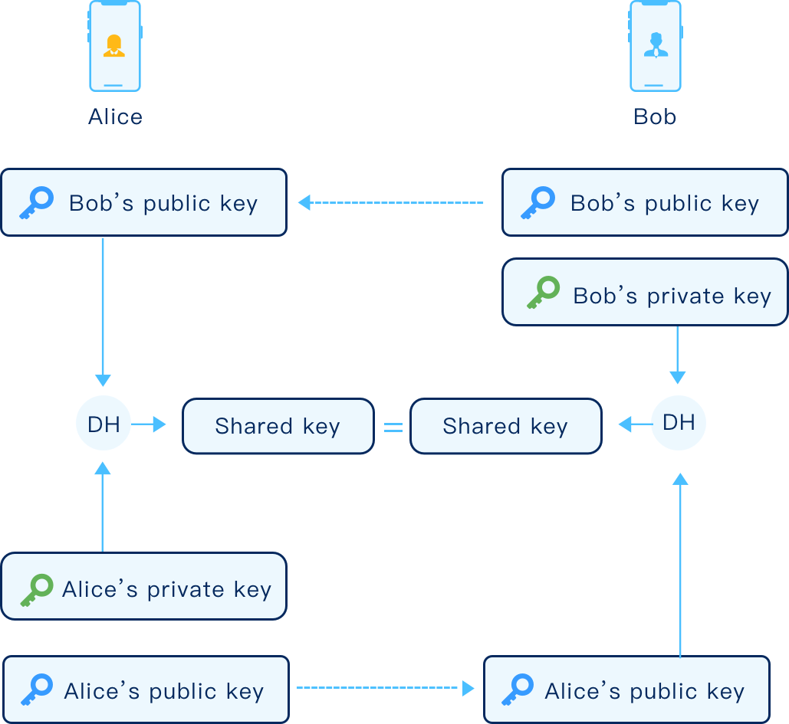
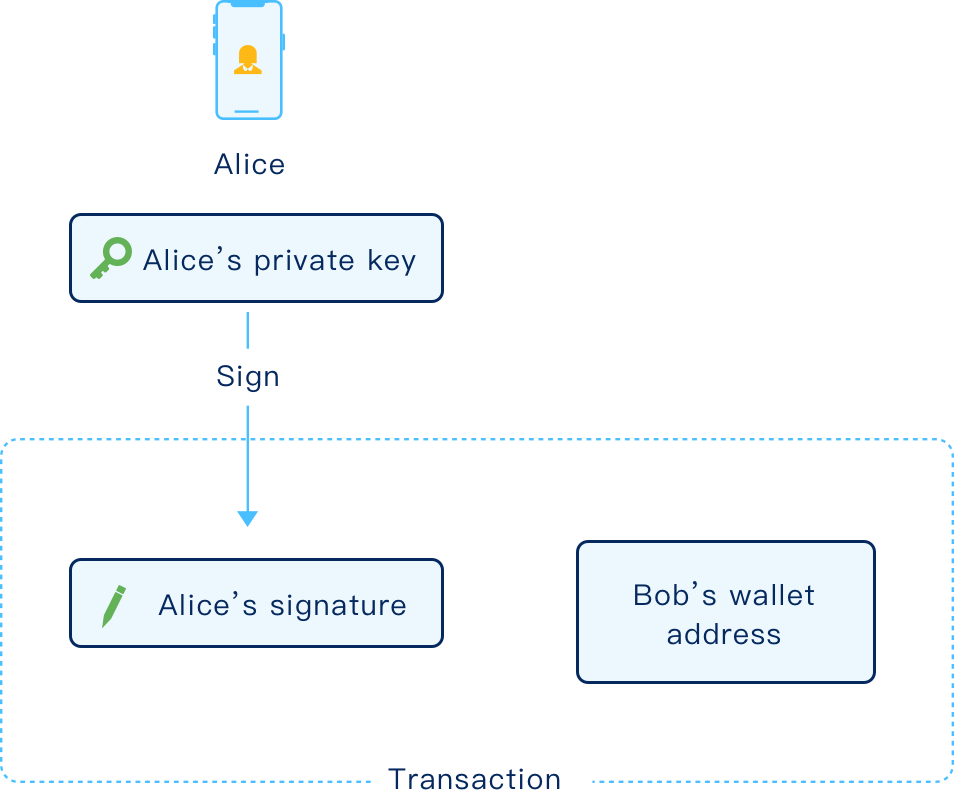
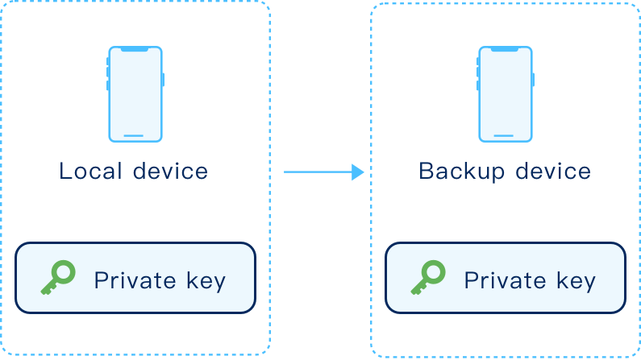

BCM 密钥对 Q&A
Q: 为什么需要创建一对密钥呢？
A:
A :用户在注册时会创建一对密钥用于帐号身份认证和通讯数据加密。其中的私钥只存储在
用户本地手机中，用于生成数字签名，该数字签名可用对应的公钥验证合法性。其中的公
钥用于加密，加密后的数据只有用对应的私钥才能进行解密。公钥还用于生成用户在
BCM中的身份标识OpenID；

Q : 这对密钥具体是被怎么使用的？
A:
登录 ：用户在登录时，会用存储在本地设备上的私钥来验证用户的身份。用户换设备登录
BCM时，需要导入注册时导出的私钥到该登录设备上，核验用户的真实身份。

发消息 ：
在两方用户通讯时，密钥对用于在不泄露双方各自私钥的前提下协商出对称的会话加密密
钥，用来加密双方通讯内容。具体协商过程，基于EC DH协议，Alice和Bob分别拿到对方
的公钥，结合自己的私钥采用DH算法产生相同的DH输出，作为会话加密密钥。如下图所
示：

使用钱包时：
当用户Alice向Bob支付加密货币时，需要利用Alice的私钥对该笔转到Bob的钱包地址上的
交易进行签名，以验证该笔交易货币属于Alice，同时只有Bob可以用Bob的私钥才能对该
笔货币进行再次交易。

Q:注册时提供的私钥丢了怎么办？
A:
用户私钥只存储于本地设备中，并不上传到服务器上，用户应妥善保管个人私钥。我
们将提供把私钥备份到其他手机的功能；当用户存储在本地手机的私钥丢失时可以用备份
的私钥来验证身份。

Q:用户将私钥泄露给他人了怎么办？
A:
私钥是用户登录BCM的唯一凭证，当其他第三方获得用户的私钥时，可对用户的账号
进行任何形式操作。用户应妥善保管个人私钥，保证私钥的安全和隐秘，坚决避免泄露给
其他第三方。